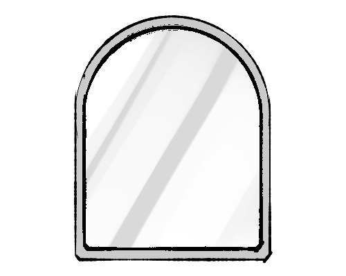

나는 일을 미룰 때
미뤄도
어떻게든
할 수 있을 것 같다.
구제불능
인 것 같다.
의욕도 생기지 않고
무의미
해서 미룬다.
세세한 것까지 계획
을 세우다 보니 벌써 몸과 마음이 지쳐서 미룬다.
일을 벌이긴 벌였는데 이제는
흥미
가 떨어져서
미룬다.
새로운 일을
시작하려 할 때 나는
완벽한 계획
을 세세하게 짠다.
시작할 때는 재밌었는데 금방 다른 재밌는 것에
눈을 돌린다
.
제대로 해내지 못할까봐
두렵고 불안하다
.
누가
시키거나 강제성
이 없으면 이어나가지 못한다.
그렇게
오래 걸리지 않을 것 같아
좀 더 미뤄본다.
해야 할 일이
너무 많다고 느낄 때 나는
빨리 끝내야 하지만
지금 하고 싶지가 않다
.
아니, 원래부터 하고 싶지 않았다.
앞으로가
걱정되고
잘 해내기가 어려울 것 같다.
중요한 일보다는
더 재미있는 일
에 집중한다.
과거의 경험
을 생각해보면 아마 그렇게 오래 걸리지 않을 것 같아 좀 더 미뤄본다.
완벽하게 해내고자
세세하게 계획
을 세우고 실수하지 않으려고 노력한다.
내가 일을 잘 해내지 못하거나 미루면 내 주변인들은
날 한심하게 볼 것 같고,
면목이 없다
.
주변인들이 어떻든 크게
신경쓰이지 않는다
.
날
인정
해주지 않을 것이다.
주변인이 날 비난하는 말을 한다면
짜증
이 날 것이다.
결과보기